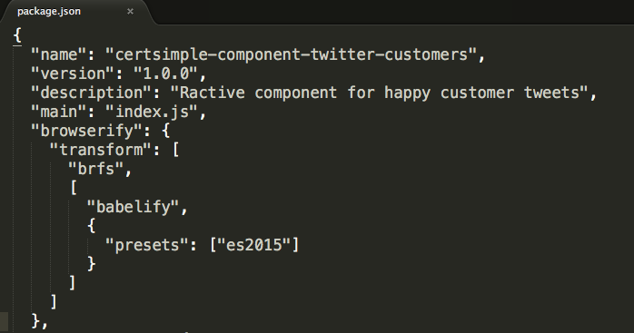
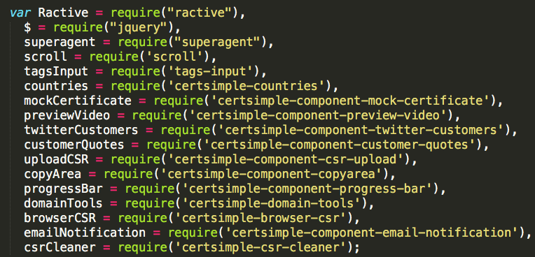
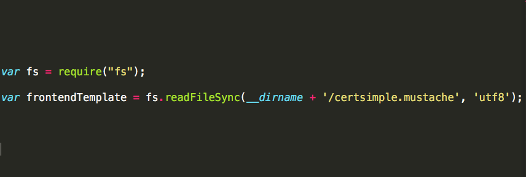
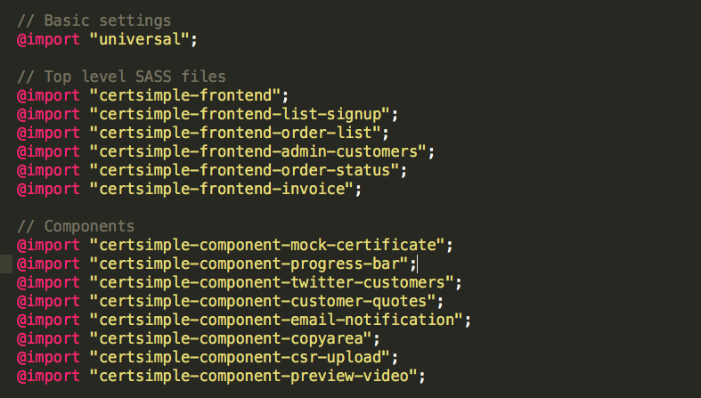
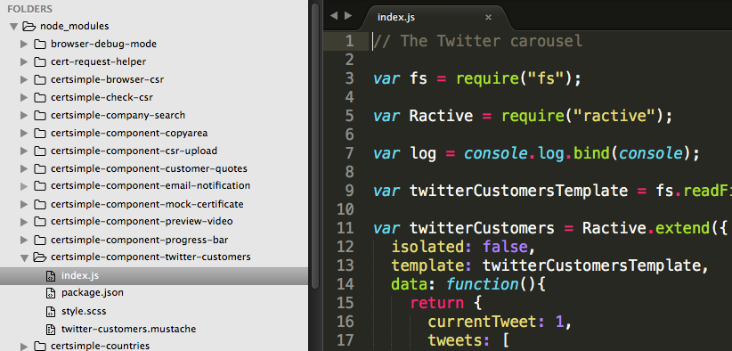

Yaay the projector works
You may need to zoom out a little if the text is too bigNOT A BROWSERIFY TALK
NPM Everywhere
@mikemaccana


Built web stuff for Google, Microsoft,
and a whole bunch of startups.
EV SSL
Checks the identity behind the certificate
Takes "7-10 days"
CertSimple do this in an average of 5 hours.
Connects to:
- Governments in 62 countries
- Independent business directories
- Data cleansing services
- DNS/whois
- Fuzzy matching
- webcrypto / custom openssl / powershell generation
- SSE for realtime updates
- Certificate Authority
How CertSimple is built
- We use npm on the backend
- We use npm on the frontend
- All our code lives in npm modules
- All our components live in npm modules
- All our styles live in npm modules
Why we chose npm
How you can use npm
All the things you'll wish you knew earlier
WHY NPM
npm is where the packages are
 JSPM: 451 modules
JSPM: 451 modulesEvery package we needed was officially maintained on npm

frontend attitude to npm

USE MAINTAINED OPEN SOURCE PROJECTS
NOT CODE COPIED FROM STACKOVERFLOW
Things we didn't know we needed
- country-data
- sorts
- vatrates
Other module formats?
- window globals are dead
- RequireJS never had a module repository - dead
- UMD only exists because of globals and Require
- Very few ES6 packages, and they’ll be on npm anyway
MODULES EVERYWHERE
Our node backend is also pure modules

Why just modules?
- Simple imports
- Easier to open source
- Write it like you'd publish it.
Bundling npm modules
Your code + dependencies

GULP AND BROWSERIFY
Basic browserify
js/src/index.js

bundle
js/dist/index.js

bundle contains all the dependencies
frontend module - package.json
frontend module - index.js
GULP AND BROWSERIFY
THE REST
What about HTML?
brfs
Include non-JavaScript files
brfs
STYLING
Styling
Use 'sass-npm' to import SASS from npm files.
Style things relative to component
sass-npm
COMPONENTS
A module per component
KEEPING BUNDLES SMALL
Not delivering a 3MB JS bundle
discify

KEEPING YOUR CODE RELEVANT
Sublime .project prioritises private modules
sublime .project file
DEPLOYING
package.json isn't enough
- a version 1.0.0 - only use b version 1.2.0
- b version 1.2.0 - use version c 1.0.0 or newer
- c - could be any version newer than 1.0.0
npm shrinkwrap
Provides consistent deploys
Specifies the full tree, all the way down
Built into npm (use npm v3)
WE GET
- Access to 230,000 JavaScript modules
- We can find stuff - JS, HTML & SASS in one place
- We can reuse anything without extra work!
This is what we use in production at CertSimple